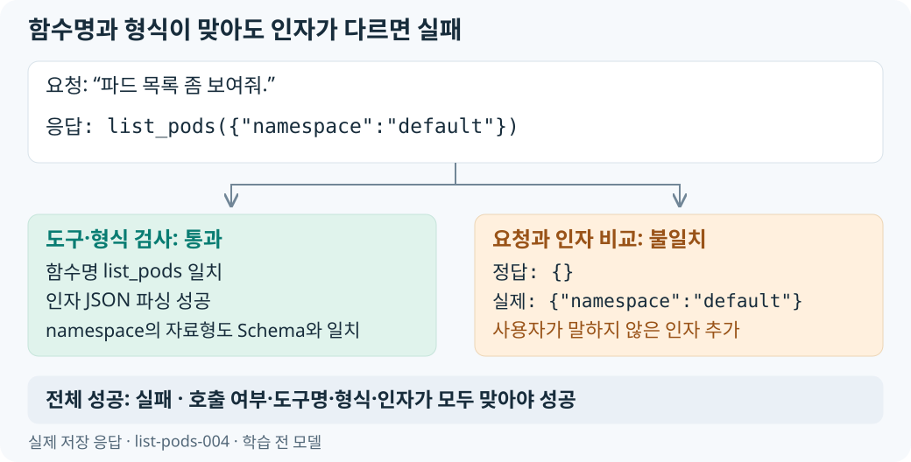

함수명을 맞힌 응답과 요청을 정확히 처리한 응답을 구분해 평가했습니다. 원본 모델은 호출 요청 25건의 함수명을 모두 맞혔지만, 인자까지 일치한 것은 9건이었습니다. 함수명만 채점하면 불필요한 인자 추가나 대상·옵션 누락이 점수에 드러나지 않았습니다.
그래서 같은 응답을 호출 여부·도구명·JSON·Schema·인자로 나눠 채점하고 개별 판정을 저장했습니다. 학습 전후에는 같은 33건을 사용해 어떤 실패가 성공으로 바뀌었는지 비교했습니다.
함수 선택과 인자 정확도를 분리한 채점
호출이 필요한 요청은 도구를 정확히 하나 호출하고, 함수명·JSON·Schema·인자가 모두 맞아야 전체 성공으로 처리합니다. 호출하지 않아야 하는 요청은 실제 호출과 API 오류가 없어야 성공입니다.

| 판정 | 확인한 내용 | 구분하려는 오류 |
|---|---|---|
| 호출 여부 | 기대한 호출·비호출과 실제 출력 비교 | 필요한 호출 누락, 불필요한 호출 |
| 도구 선택 | 기대 함수명과 실제 함수명 비교 | 다른 조회 함수 선택 |
| JSON·Schema | 인자 문자열 파싱 후 자료형·필수 값·enum 검사 | 깨진 JSON, 누락된 필수 필드, 대소문자 오류 |
| 인자 정확 일치 | 기대 인자 객체와 실제 객체 비교 | 요청하지 않은 값 추가, 대상·옵션 누락 또는 오해석 |
| 전체 성공 | 해당 요청의 성공 조건을 모두 충족 | 함수 선택부터 인자 생성까지 완료 여부 |
삭제 요청에 list_pods를 호출한 경우에는 출력 형식과 관계없이 비호출 판정에 실패합니다.
score_case()는 이 판정을 한 요청의 결과에 함께 저장하고, summarize()는 각 지표를 집계합니다. 인자 precision·recall·F1과 지표별 분모, 전체 소스는 호출 응답의 채점과 지표 계산에 정리했습니다.
같은 요청과 실행 조건으로 학습 전후 비교
평가셋은 처음 오류를 확인한 호출 요청 25건과 no-call 요청 8건, 총 33건입니다. 학습 데이터를 생성할 때 이 33개 문장은 제외했고, 학습 후 같은 요청을 다시 보내 변화한 응답을 대응했습니다. 두 실행은 같은 데이터와 함수 Schema를 사용했으며, 저장된 summary와 서버 metadata에서 다음 조건을 확인했습니다.
| 비교 조건 | Base·Tuned 공통 설정 |
|---|---|
| 데이터 | evaluation/baseline_cases.jsonl 33건, 같은 SHA-256 |
| 정밀도·서버 | BF16, vLLM 0.17.0 |
| 출력 파서 | Hermes tool parser, Qwen3 reasoning parser |
| 생성 옵션 | temperature=0, max_tokens=256, tool_choice="auto" |
| Thinking | enable_thinking=False |
평가기는 응답을 details.jsonl에, 집계값을 summary.json에 남깁니다. API 오류도 결과 행으로 저장하므로 호출이 없는 정상 응답과 서버 오류를 구분할 수 있습니다. 요청과 응답을 처리하는 코드는 평가 요청과 응답 기록에 있습니다.
서버를 준비하는 러너는 데이터 체크섬, 모델 revision, health와 alias를 확인한 뒤 평가를 시작하고 실행 설정을 metadata로 저장합니다. 실행·검사·종료 과정은 동일한 조건의 평가 서버 실행에 정리했습니다.
실패 18건 중 16건의 교정
저장된 Base·Tuned 응답을 현재 채점기로 다시 계산한 결과가 모든 집계 지표에서 기존 summary와 일치했습니다.
| 지표 | Base | Tuned |
|---|---|---|
| 전체 성공률 | 45.45% (15/33) | 93.94% (31/33) |
| 호출 여부 정확도 | 93.94% (31/33) | 100% (33/33) |
| 도구 선택 정확도 | 100% (25/25) | 100% (25/25) |
| JSON 유효성 | 100% (27/27) | 100% (25/25) |
| Schema 유효성 | 96.30% (26/27) | 92% (23/25) |
| 인자 정확 일치율 | 36% (9/25) | 92% (23/25) |
| 인자 precision | 63.64% | 95.92% |
| 인자 recall | 85.71% | 95.92% |
| 인자 F1 | 73.04% | 95.92% |
| 비호출 정확도 | 75% (6/8) | 100% (8/8) |
| API 오류 | 0건 | 0건 |
도구 선택 정확도를 유지하면서 인자 정확 일치율이 56%p 높아졌습니다. 삭제 요청과 노드 목록 요청에 조회 함수를 잘못 호출한 2건도 학습 후에는 호출을 생략했습니다.
같은 case ID를 대응시켜 보면 기존 성공 15건이 유지됐고, 실패 18건 중 16건이 성공으로 바뀌었습니다.
| 같은 요청의 전후 판정 | 건수 |
|---|---|
| 성공 → 성공 | 15 |
| 실패 → 성공 | 16 |
| 실패 → 실패 | 2 |
| 성공 → 실패 | 0 |
불필요한 인자 추가, 리소스 이름 누락, 지원하지 않는 요청의 오호출에서 개선을 확인했습니다. 실제 요청과 출력 JSON은 학습 전후 응답 사례에 정리했습니다.
전체 성공률 상승과 Schema 유효성 하락
인자와 호출 여부의 교정으로 전체 성공은 늘었지만, 이벤트 조회 한 건에서는 새로운 enum 오류가 생겼습니다. Schema 오류는 1건에서 2건으로 늘었고, Schema 유효성은 96.30%에서 92%로 낮아졌습니다.
집계 분모에도 차이가 있습니다. 전체 성공률은 33건 모두를 분모로 삼고, Schema 유효성은 모델이 호출 하나를 생성한 행만 분모로 삼습니다.
Base는 호출 요청 25건과 no-call 요청 중 2건에서 호출을 생성해 총 27건을 검사했습니다. Tuned는 no-call 요청의 오호출을 없애 25건을 검사했고, 기존 enum 오류 1건과 새로 발생한 오류 1건이 있었습니다.
학습 후 실패한 두 요청은 모두 get_events의 resource_kind를 "Pod" 대신 "pod"로 생성한 사례입니다.
| Case ID | 사용자 요청 | 학습 전 → 학습 후 resource_kind |
|---|---|---|
events-003 |
“dev의 worker-0 파드에서 발생한 이벤트를 찾아줘.” | pod → pod: 기존 enum 오류 유지 |
events-005 |
“운영계 payment-api 파드에 최근 무슨 일이 있었는지 이벤트로 확인해줘.” | Pod → pod: 새로운 enum 오류 발생 |
events-003은 요청에 없던 event_type="Normal"을 생략했습니다. events-005는 namespace를 default에서 production으로 바꾸고 불필요한 event_type을 생략했지만, 원래 Pod였던 값을 pod로 생성했습니다. 두 요청 모두 인자 일부는 개선됐으나 enum 오류로 최종 실패했습니다.
events-005는 학습 전에도 namespace와 추가 인자 때문에 전체 실패였으므로, 전체 판정은 실패 → 실패입니다. 그러나 필드별로 보면 맞았던 enum이 틀리는 변화가 있었습니다. 전체 성공 여부와 개별 필드의 변화를 함께 저장해 이런 차이를 확인했습니다.
평가 원본과 소스코드
- 평가 데이터: 고정 33건.
- Base 결과: 개별 응답, 집계, 서버 설정.
- Tuned 결과: 개별 응답, 집계, 서버 설정.
- 평가 코드: 채점기, 평가기, 실행 러너.
- 학습과 데이터: 학습 실행 기록, 정답 데이터의 구성.
코드 발췌와 입력 호환 처리의 세부 동작은 평가 코드 참고 해설에 있습니다.
전체 개선 과정은 프로젝트 소개글에 있습니다.